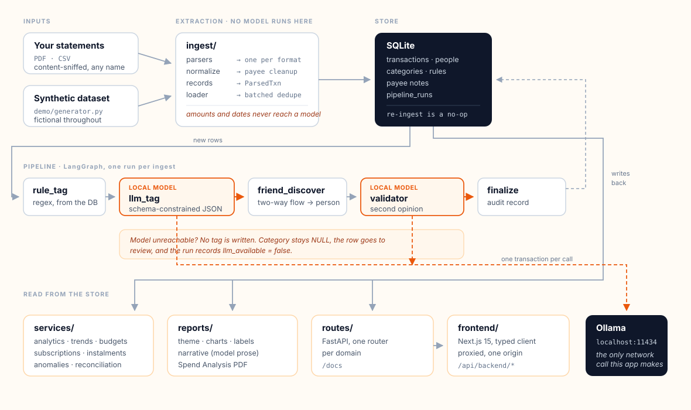
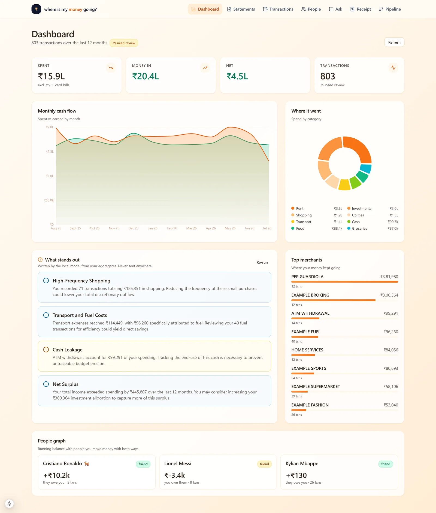
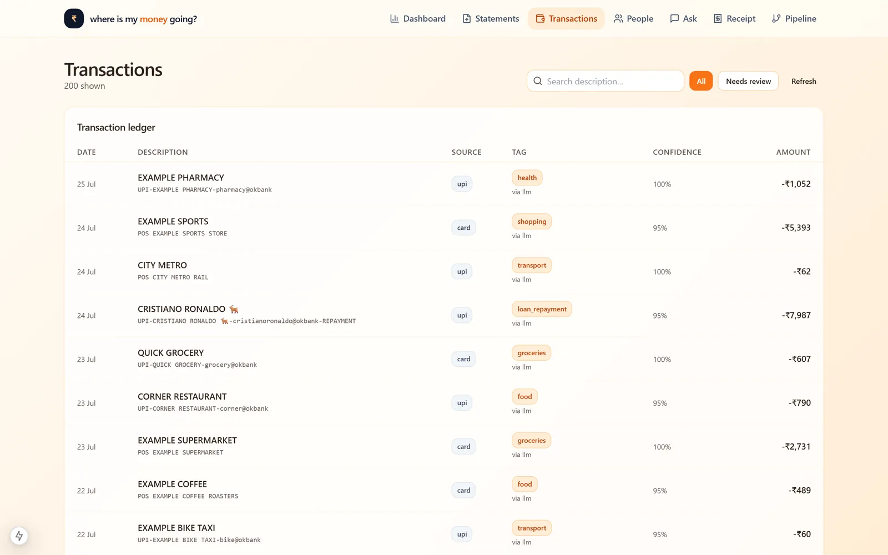
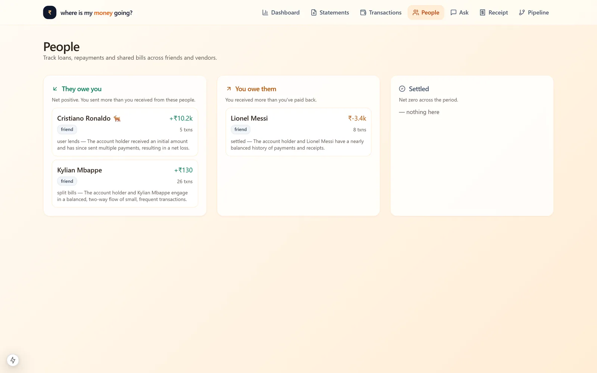

Where Is My Money Going? · statements in, a categorised answer out, on your own machine
I couldn't answer that question from my own bank statement. A year of UPI transfers to names that meant nothing to me weeks later, and every app that promised to sort it out wanted my full financial history uploaded to a server first. So the constraint came before the design: nothing leaves the machine. Everything else follows from that. Plain code reads the statements and pulls out the numbers; an AI model running on my own laptop only ever puts a label on rows the code has already read. That way no figure on your statement can be something the model made up. Two more passes tidy it up: one works out which payees are actual people you send money back and forth with, the other double-checks anything the first pass wasn't sure about.
The bug I wrote, and how the architecture works
The part I'd actually talk about in an interview is a bug I wrote myself. A failed model call was returning a plausible-looking {"category": "uncategorized", "confidence": 0.0}, and the pipeline stored it as genuine output. So 285 transactions the model had never seen sat in the database labelled as its work, and the dashboard reported "80% uncategorized". The model itself was fine. It's a reasoning model, and asking it for JSON the naive way made its output degenerate mid-string. Turning the thinking channel off and passing a real JSON Schema fixed it outright. The lesson stuck harder than the fix: a fallback that imitates success hides the bug that caused it. Failures now return nothing at all, and the row stays visibly untagged. Once I knew what to look for I found two more of the same species, including a prose quality gate that was rejecting 100% of valid output while a canned fallback went out in its place.



